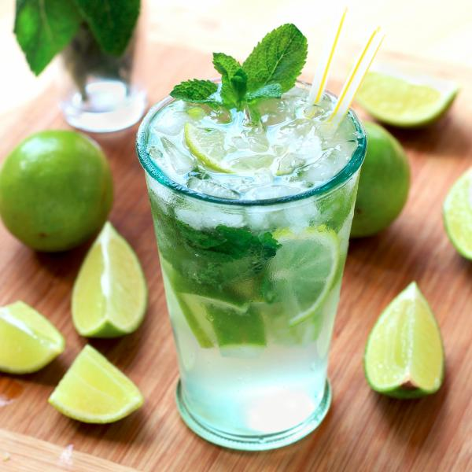
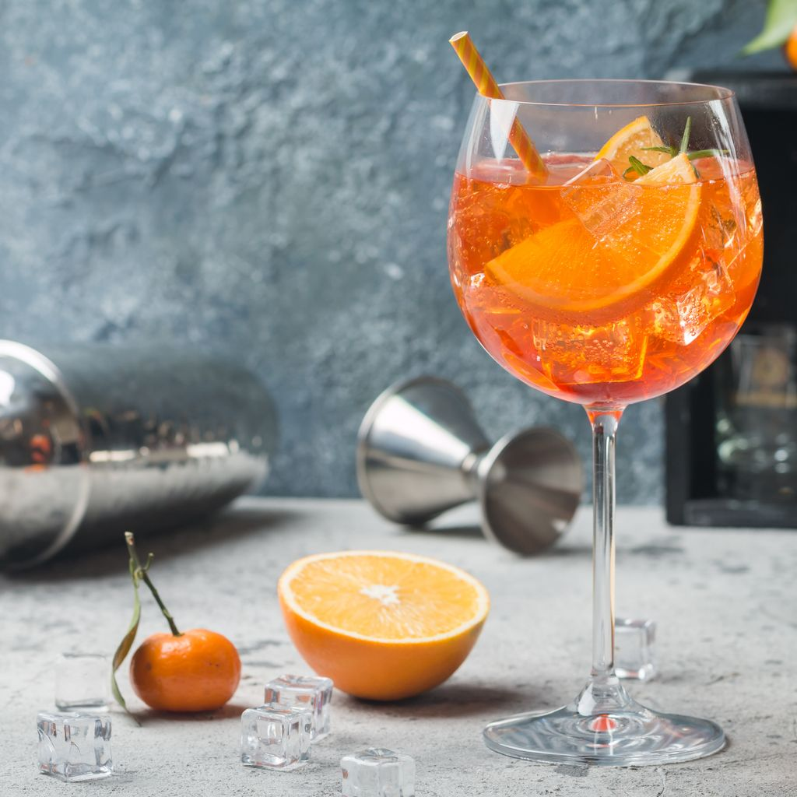
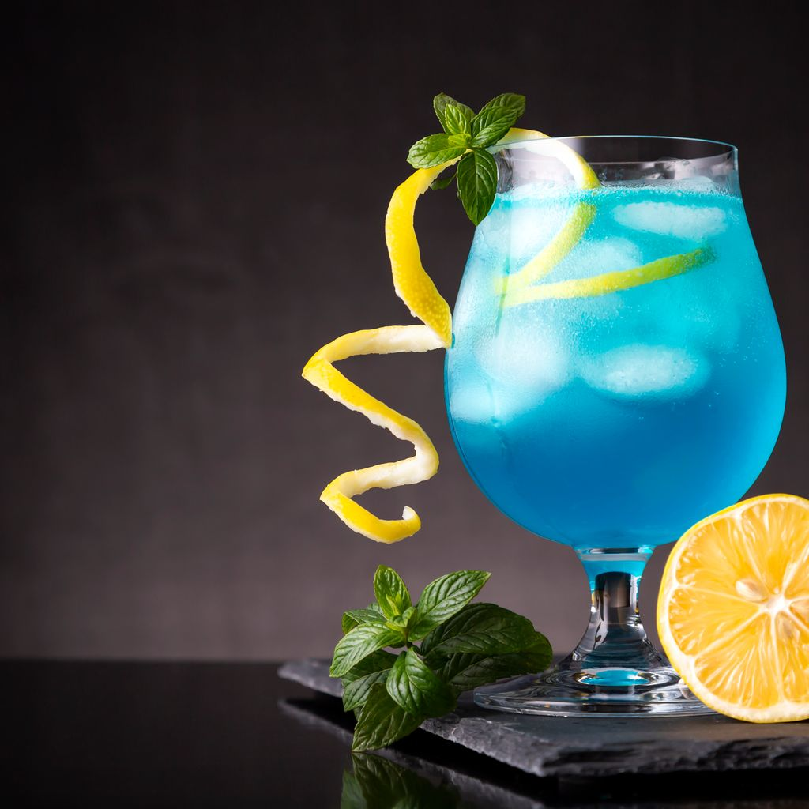
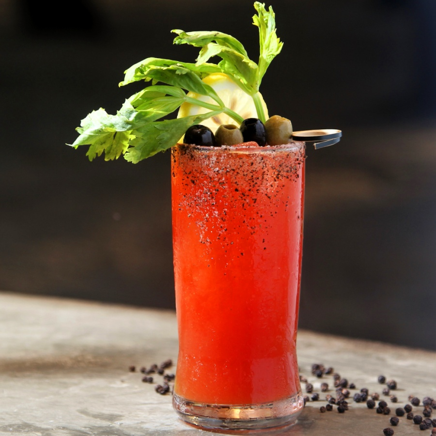
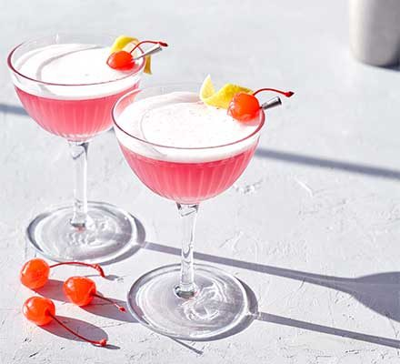
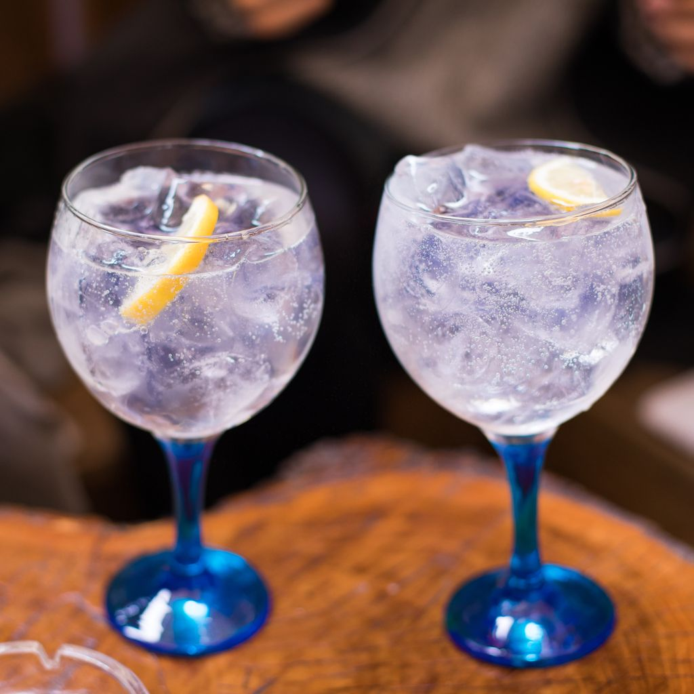
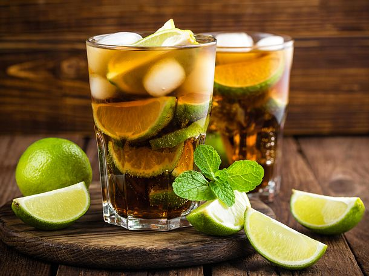
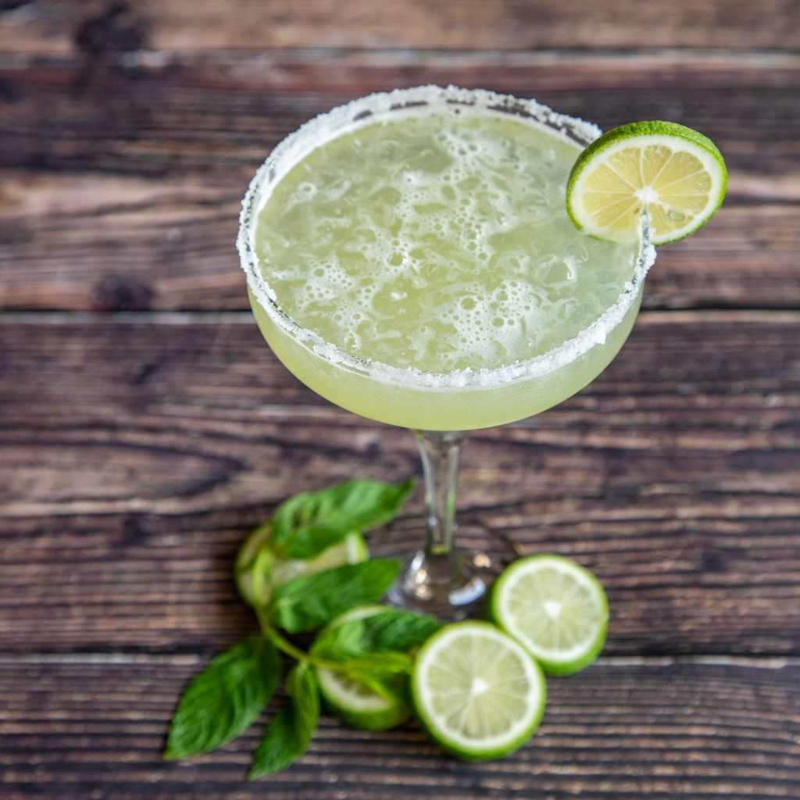
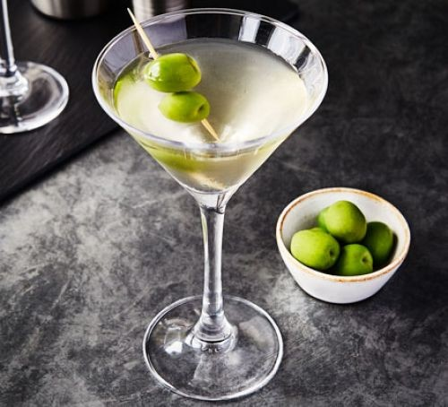

Il est sans conteste le cocktail préféré des français et probablement l’un des plus faciles à réaliser. Le Mojito, traditionnellement composé de 4 à 6 cl de rhum blanc, d’eau gazeuse, de 3 cuillères à café de sucre de canne, d’1/2 citron vert, de glaçons et de feuilles de menthe, peut aussi se dévergonder avec du jus de fraise par exemple ! Il se mariera à la perfection avec un délicieux guacamole au piment doux.

2
le Spritz
Longtemps oublié car un peu amer, le Spritz s’offre pourtant depuis quelques années un retour triomphant, notamment auprès des plus jeunes. Pour le réaliser il vous faudra : 6cl de Prosecco, 4 cl d’un alcool amer à l’image de l’Apérol, 2 cl d’eau gazeuse, une tranche d’orange et des glaçons. Il sera le meilleur allié de tous vos antipasti alors le moment est venu de sortir vos involtinis, vos olives Atelier Blini et vos mini poivrons fourrés à la ricotta !

3
le Blue Lagoon
C’est sa couleur qui le rend si populaire, et ce bleu, le Blue Lagoon le doit au curaçao ! Versez-en 3cl auxquels vous ajouterez 4cl de vodka et 2cl de jus de citron. Pour une alliance parfaite entre mets et boisson, pensez à associer la totalité de la gamme de Houmous l'atelier Blini.

4
le Bloody Mary
Avis aux palais salés, le Bloody Mary n’est pas au goût de tous mais possède ses fans inconditionnels. Pour le réaliser il vous faudra être bien équipée ! Mélangez 4cl de vodka, 12cl de jus de tomate, ½cl de jus de citron jaune, ½cl de sauce Worcestershire, 2 gouttes de tabasco, une pincée de sel de céleri et de poivre. Une vraie tambouille de sorcière qu’on appréciera de déguster avec quelques crevettes à picorer.

5
le Pink Lady
Rouge comme son collègue le très connu Cosmopolitan, le Pink Lady est, lui, composé de 4cl de gin, de 1cl de sirop de grenadine et de 2cl de jus de citron vert. Sans oublier de proposer le tarama Atelier Blini pour un service 100% pink.

6
le Gin Tonic
Il y a très longtemps, vers 1750, l’eau de tonique était utilisée comme remède contre la malaria par les marins britanniques à la conquête de l’Inde. Ces marins-génies ont découvert qu’en ajoutant un peu de gin à l’eau, le goût amer disparaissait. On les en remercie! Dans un verre highball ou une coupe de vin (qui permet de garder davantage les bulles du soda) rempli de glace, verser le sirop de tonic et le gin. Remuer à l’aide d’une cuillère de barman. Compléter avec le soda et décorer d’une tranche de lime.

7
le Rhum & Coke
Le rhum &Coke, ou Cuba Libre pour le reste de la planète (au Québec, on aime être différent), a été popularisé à l’époque de la prohibition par les mafiosos qui profitaient de Cuba pour vendre leur alcool. Ce cocktail est donc un vrai classico. « Por Cuba libre! » Verser le rhum, le sirop de cola et le jus de lime dans un shaker. Mélanger avec de la glace et filtrer dans un verre Boston. Ajouter le soda et décorer de quelques quartiers de lime.

8
la Margarita
La margarita est un cocktail rafraichissant à base de tequila inventée en 1948 par Margaret Sames, d’où le nom (Margarita est la traduction en espagnol du prénom Margaret). Fait intéressant : la margarita est le cocktail le plus commandé en Amérique du Nord. Dans un shaker, ajouter les ingrédients et remplir de glace. Secouer vigoureusement afin d’incorporer un maximum d’air aux ingrédients, filtrer et verser dans une coupe à martini froide givrée de sel. Décorer d’un quartier de lime.

9
le Martini
« Martini, shaken, not stirred », comme disait James Bond. Ce cocktail aurait été inventé après l’importation du vermouth italien Martini aux États-Unis. Un barman l’aurait alors mélangé à du gin, créant ainsi le cocktail le plus connu du monde. Mettre de la glace dans le verre de martini avec de l'eau afin de le refroidir. Dans un verre à mélanger, mettre de la glace, du gin et du vermouth. Brasser à l'aide d'une cuillère de bar. Vider le verre de martini. Passer le cocktail dans un tamis et le verser dans le verre à martini. Ajouter un zeste de citron.

10
le Moscow Mule
Un bon vieux classique rassurant et réconfortant qui surclasse le néanmoins célèbre Russe Blanc. Il se compose de vodka, de bière de gingembre et de jus de citron vert. Contrairement à ce que son nom indique, il serait né à New York en 1948. Il est traditionnellement servi dans une tasse en cuivre.